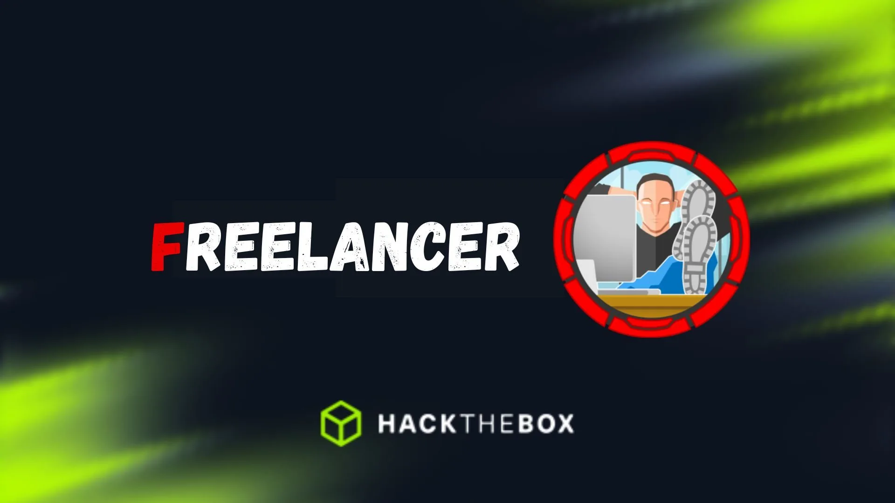
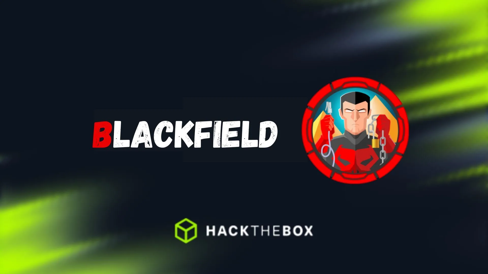
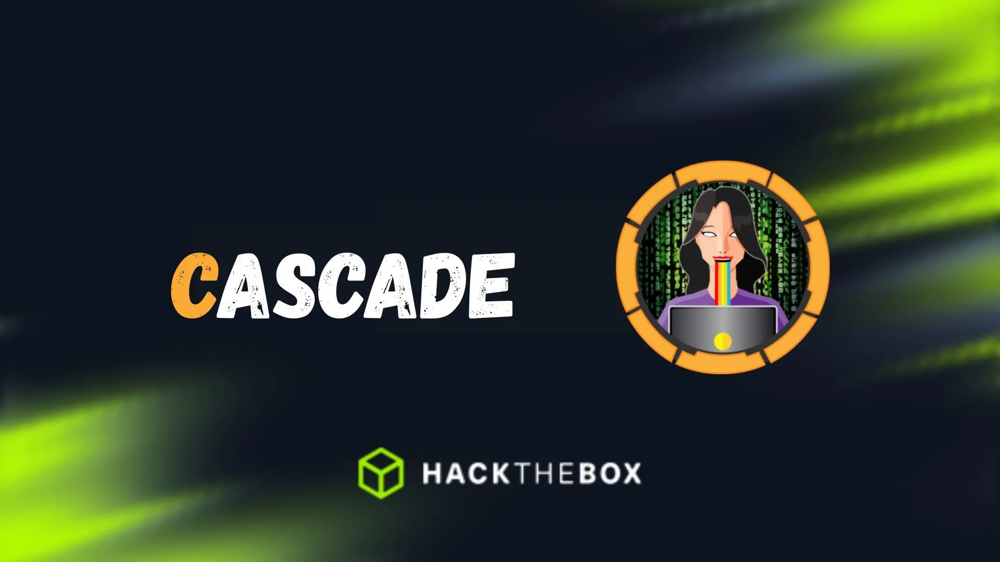
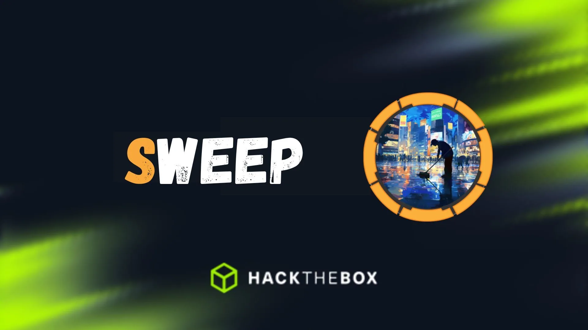

Freelancer: a hard HackTheBox machine
Hard HackTheBox Overview Freelancer is a hard box with a creative initial access chain through a freelancing web application. A logical flaw in the password reset flow lets you activate an ac...

Hard HackTheBox Overview Freelancer is a hard box with a creative initial access chain through a freelancing web application. A logical flaw in the password reset flow lets you activate an ac...
Hard HackTheBox Overview Search is a hard Active Directory box. Initial access comes from a password visible in an image on the web server. From there it’s kerberoasting, password spraying, d...

Hard HackTheBox Overview Blackfield is a hard Active Directory box. Guest access lets you enumerate usernames, AS-REP roasting gives you an initial foothold, and a ForceChangePassword edge in...
Hard HackTheBox Overview Vintage is a hard assumed-breach Active Directory box. You start with credentials for a low-privileged user in a domain where NTLM is disabled, forcing kerberos-only ...

Medium HackTheBox Overview Cascade is a medium Active Directory box and probably my most detailed writeup in terms of methodology. A legacy password attribute left in LDAP gives the first foo...
Advanced Secdojo Overview This lab replicates the complexity of a modern enterprise IT environment by bringing together a variety of interconnected machines. You’ll need extensive reconnaiss...
Advanced Secdojo Overview This writeup covers a full compromise of the AD105 lab from Secdojo — a multi-forest Active Directory environment spanning three forests (SOKOLO, LONIPO, BORITO). S...

Medium HackTheBox Overview Sweep is a medium Active Directory box built around Lansweeper, an IT asset management platform. Guest access leaks usernames, a generic account gets you in, and fr...
Intermediate Secdojo Overview A lab designed to test your skills in network reconnaissance, enumeration, and exploitation of a Windows system. It presents a realistic scenario where you must...
Intermediate Secdojo Overview An advanced Active Directory enterprise forest, challenging you to pivot from exposed data to full forest compromise by abusing modern AD security features. Re...